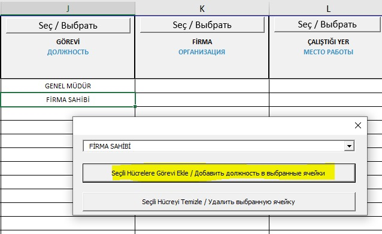

Для получения разрешения на вход на территорию (процедура одинакова как для посетителей, так и для постоянных сотрудников), применяется двухэтапный процесс.
Этап 1:
Необходимо официальное письмо, подписанное руководителем компании или уполномоченным лицом (с доверенностью), с запросом на имя Директора по безопасности Артема Зародыша и Заместителя директора по безопасности Селима Темрена.
Этап 2:
После получения одобрения, следующие документы должны быть отправлены нам на электронную почту id@t2ic.com:
• Скан паспорта
• Официальное письмо
• Информация о мерах безопасности на территории
• Форма согласия на вход на территорию
• Таблица входа персонала в формате Excel (должна быть полностью заполнена и соответствовать инструкциям)
Примечание: Для персонала с назначением, карта или срок пропуска будет действовать на срок назначения.
Физическая доставка документов не требуется.
Важно, чтобы документы были правильно расположены и названы в соответствии с правилами. Это ускорит процесс обработки документов. Документы должны быть названы в соответствии с паспортом, используя фамилию и имя с большими буквами, и для каждого человека должны быть созданы отдельные файлы. Пожалуйста, назовите ваши документы по номеру паспорта и отправьте их в формате ZIP 7Z, с расширением PDF.
Примечание: Если персонала несколько, документы должны быть названы по именам файлов. Например, все сканы паспортов должны быть в одном файле с названием "PASAPORT".
Например: в файле KARINA SAZANOVA:
KARINA SAZANOVA PASAPORT
KARINA SAZANOVA AÇIK RIZA
KARINA SAZANOVA YASAKLI FALIYETLER
ВАЖНО: Если персонал приезжает из другой компании, нужно приложить контракт этой компании с фирмой на территории (первая и последняя страницы).
• Кроме того, без медицинской карты можно разрешить вход для посетителей на срок не более 5 рабочих дней. Для более длительных входов необходимо связаться с subcontractor@t2ic.com.
Заявление об открытом согласии для доступа на территорию Атомной Электростанции Аккую (АЭС)
Этот документ подтверждает, что в рамках процедур для получения доступа на территорию АЭС Аккую, данные о личности, включая их запись, хранение, обновление, классификацию и обработку, а также, в случаях, разрешенных соответствующим законодательством и с явным согласием, раскрытие и передача этих данных третьим лицам, принимаются и подтверждаются.
1. Документ состоит из двух страниц.
- На первой странице в отмеченном месте нужно указать имя и фамилию сотрудника.

2. Вторая страница содержит поля для личных данных сотрудника и его подписи:
- В поля, отмеченные стрелкой номер 1, следует вписать имя и фамилию сотрудника.
- В поля, отмеченные стрелкой номер 2, сотрудник должен поставить свою подпись.
- В поле, отмеченное стрелкой номер 3, следует указать номер паспорта сотрудника.
- В поле, отмеченное стрелкой номер 4, следует указать дату составления документа.
- В поле, отмеченное стрелкой номер 5, следует указать номер телефона сотрудника.
- В поле, отмеченное стрелкой номер 6, следует указать адрес электронной почты сотрудника.

Информация о документе, который содержит правила, обязательные для соблюдения на территории Атомной Электростанции Аккую (АЭС), следующая:
Документ состоит из двух частей, и в обеих частях должны быть заполнены одинаковые данные:
• "Имя и фамилия" (обозначено стрелкой номер 1): В это поле должно быть вписано имя и фамилия сотрудника.
• "Номер паспорта/ID" (обозначено стрелкой номер 2): В это поле должен быть вписан номер паспорта сотрудника или, если сотрудник не гражданин Турции, номер паспорта.
• "Компания" (обозначено стрелкой номер 3): В это поле должно быть вписано полное и точное название компании, в которой будет работать сотрудник.
• "Я прочитал и понял." (обозначено стрелкой номер 4): В это поле указывается дата заполнения документа, и сотрудник должен поставить свою подпись.


Необходимо предоставить копию (фотокопию) или скан вашего паспорта, на которой будет четко изображены
как передняя, так и задняя стороны документа, как показано на изображении рядом. На скане обе стороны должны быть четкими,
без размытостей или теней, чтобы информация на паспорте была легко читаемой.
О Проживании Персонала, Который Проходит На Строительную Площадку Akkuyu Nükleer A.Ş.
Для проведения проверки безопасности персонала, который проходит на строительную площадку Akkuyu Nükleer A.Ş. Министерством энергетики, необходимо предоставить
информацию о месте жительства сотрудников. Пропускные карты будут выданы сотрудникам согласно этим спискам, и важно отметить, что для тех, чьи данные не будут
предоставлены, Akkuyu Nükleer A.Ş. не будет выдавать карты.
При отправке документов для проверки в Министерство, если адрес проживания сотрудника ещё не определён или может измениться, ОБЯЗАТЕЛЬНО необходимо обновить
или добавить информацию о месте жительства при запросе пропускной карты для доступа на площадку.
На строительной площадке Akkuyu Nükleer A.Ş. для сотрудников, которые будут работать, добавлены следующие столбцы для ввода данных и инструкции по их использованию:
• В таблице ввода данных сотрудников есть столбцы, в которых необходимо выбрать значение. Чтобы выбрать значение в этих столбцах, нужно нажать кнопку "Seç/Выбрать".
В эти поля нельзя вводить данные вручную, и нельзя вставлять скопированный текст. Эти столбцы не могут быть оставлены пустыми, и данные, не входящие в список вариантов,
не будут приняты.
• Столбцы, в которых нет кнопки "Seç/Выбрать", должны быть заполнены вручную. Все данные в этих столбцах должны быть написаны большими латинскими буквами.

Инструкция по вставке выбранных данных в соответствующий столбец:
• Для выбора соответствующих строк в столбце используйте указатель мыши.
• В открывшемся окне нажмите кнопку "Добавить задачу в выбранные ячейки".
Выбранные данные будут добавлены в выбранные строки. Чем больше строк будет выбрано, тем больше строк будет заполнено данными.

Инструкция по удалению введенных данных:
• Чтобы удалить данные в соответствующем столбце, нажмите кнопку "Очистить выбранную ячейку".

• Операция удаления с помощью команды DELETE невозможна. При попытке удаления с помощью команды DELETE будет выведено сообщение об ошибке.

Инструкция по изменению данных:
• Чтобы внести изменения в соответствующие данные, нажмите кнопку "Seç/Выбрать" и выберите новую информацию. Затем нажмите кнопку
"Добавить задачу в выбранные ячейки", чтобы завершить изменения.

Новые столбцы, добавленные в конец таблицы:
Столбец R: Место проживания сотрудника на территории Турецкой Республики, пока он работает на Акуйской АЭС. Заполнение этого столбца
не обязательно при проверке документов для Министерства, однако должно быть заполнено при запросе физической карты. Это поле не может быть
оставлено пустым, и если сотрудник проживает в пределах границ Мерсина, следует выбрать соответствующий адрес проживания. Если он проживает
за пределами границ Мерсина, следует выбрать вариант "Не проживает в Мерсине".


Столбец S: Для иностранных сотрудников следует ввести номер заявки на рабочее разрешение или номер синего удостоверения личности
(номер удостоверения, начинающийся с 99). Для турецких сотрудников или сотрудников, выполняющих визит на площадку по направлению, заполнение
этого столбца не является обязательным.

Столбец T: Если заявка на рабочее разрешение была подана, этот столбец должен быть заполнен для иностранных сотрудников.
Если имеется физический идентификатор, то столбец не заполняется. Для турецких сотрудников и сотрудников, выполняющих визит на площадку,
заполнение этого столбца не обязательно.

Заполняемые другие поля:
1. Дата поступления: Дата подготовки документов.
2. Запрашивающий: Имя и фамилия ответственного за персонал компании.
3. Контактная информация запрашивающего: Мобильный номер телефона ответственного за персонал компании.
4. Имя: Имя сотрудника, который начнет работу в компании.
5. Фамилия: Фамилия сотрудника, который начнет работу в компании.
6. ТС/ПАС: Номер удостоверения личности или паспорта сотрудника.
7. Имя отца: Имя отца для иностранных сотрудников.
8. Место рождения: Место рождения сотрудника.
9. Дата рождения: Дата рождения сотрудника.

10. Должность: Должностная информация о сотруднике.
11. Компания: Информация о компании, в которой будет работать сотрудник.
ПРИМЕЧАНИЕ: Если компании нет в списке, пожалуйста, свяжитесь с нами.
12. Место работы: Место, где сотрудник будет работать.
13. Пол: Информация о поле сотрудника.
14. Номер телефона сотрудника: Телефонный номер сотрудника.
15. Номер телефона родственника сотрудника: Телефонный номер родственника сотрудника.
16. Судимость и ограничения по здоровью: Судимость и ограничения по здоровью сотрудника, если они имеются.
17. Национальность: Информация о национальности сотрудника.
ПРИМЕЧАНИЕ: Все поля должны быть заполнены полностью в соответствии с инструкциями.

Для получения разрешения на вход на строительную площадку Akkuyu NGS и оформления карт доступа для персонала требуется письмо, подписанное руководителем компании или уполномоченным лицом (с доверенностью) и адресованное Директору по безопасности Артему Зародышу и Заместителю директора по безопасности Селиму Темрену. Это письмо должно быть отправлено по следующим шагам вместе с необходимыми приложениями:
1. Отправка письма:
Письмо, адресованное Директору по безопасности Артему Зародышу и Заместителю директора по безопасности Селиму Темрену, должно быть отправлено на адрес office@t2ic.com.
2. Проверка документов:
Официальное письмо и приложения должны быть отправлены на адреса для иностранных сотрудников: id@t2ic.com, для турецких сотрудников: muge.dundar@t2ic.com и hafize.isin@t2ic.com.
3. Таблица списка персонала:
• Таблица должна быть подписана и проштампована руководителем компании или уполномоченным лицом.
• Таблица должна точно соответствовать именам сотрудников, указанным в приложенных документах. В противном случае документы не будут обработаны.
Завершение этих процессов точно и правильно является обязательным для получения разрешения на вход и оформления карт доступа.